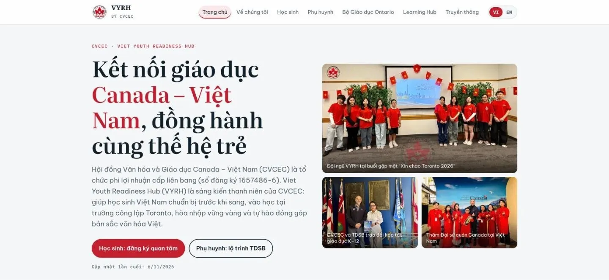

A CVCEC program
Viet Youth Readiness Hub: empowering global citizens and cultural ambassadors
The Viet Youth Readiness Hub (VYRH) is a flagship youth initiative operated by the Canada Vietnam Cultural & Educational Council (CVCEC), a federal non-profit organization incorporated with Innovation, Science and Economic Development Canada (ISED Canada). Actively participating in Canadian community life, VYRH is a dedicated ecosystem empowering young leaders to be globally competitive, civic-minded, and deeply connected to their cultural roots.
Get in touch

Recognition and civic engagement
- Leading Urban Change Program, School of Cities, University of Toronto: CVCEC’s project Bridging Heritage Language and Cultural Inclusion in Urban Education, led by Founder and President Trang Phan, was selected for a cohort of the Leading Urban Change Professional Development Program at the University of Toronto’s School of Cities. Trang Phan completed the 12-week program in June 2026. The project is developing a policy-aligned pilot model to integrate heritage language education, cultural inclusion and youth civic engagement into urban public school systems, starting in Toronto. VYRH, a program of CVCEC, is part of this work.
- Civic Dialogue & Youth Leadership: VYRH connects young people to Canadian civic life through grassroots and constituency-level engagement. Our team and students volunteer at community events and take part in the Don Valley North Youth Council, organized by the office of Maggie Chi, Member of Parliament for Don Valley North, building hands-on experience in active citizenship and democratic participation.
Youth leadership and community
We are building a network of young leaders who learn, serve and connect with their communities:


Our programs

Civic Integration & Urban Immersion
Selected for the University of Toronto School of Cities’ ‘Leading Urban Change’ initiative, our immersion framework goes beyond standard orientation. We equip international students and newcomer youth with academic readiness, leadership tools, and civic literacy to become proactive, engaged contributors to Canadian society.
Vietnamese Language & Culture Platform
Our online platform, Trường Tiếng Việt Của Em, helps children and families keep the Vietnamese language and culture alive through interactive, self-paced lessons and mentorship from experienced Vietnamese language teachers.
Explore

Study in Canada: A Guide for Vietnamese Families
Du học Canada – Cẩm nang cho học sinh và phụ huynh Việt Nam
Thinking about secondary school in Canada? Our Study in Canada site, in Vietnamese and English, walks families through Ontario’s public school system and every step of the journey:
- Students: register your interest and join a free 45-minute MapleSpark course on Canadian classroom culture.
- Parents: the TDSB application pathway, the documents to prepare and CVCEC’s commitments to families.
- Ontario education: the K–12 system, the OSSD diploma and the curriculum.
- Learning Hub: short videos, quizzes, FAQs and study permit basics.
Free of charge, no obligation.
Visit the Study in Canada site → duhoccanada.cvcec.orgStudent spotlight and recognition
At the Viet Youth Readiness Hub, our greatest pride is the academic, civic, and personal development of our students. We proudly recognize Henry Nguyen, an exemplary young advocate whose dedication and community involvement embody the core mission of VYRH: equipping young Vietnamese-Canadians with the confidence, leadership skills, and global readiness to excel in Canada while honoring their heritage.
Youth leaders

Nguyen The Bao (Henry)
Youth Civic Engagement Ambassador
A dedicated young advocate who champions youth voice in community and civic projects.

Ngo Thai Nhat An (Hailey)
Creative Media Youth Leader
Driving creative storytelling and visual strategies to amplify youth voices and community impact across digital platforms.